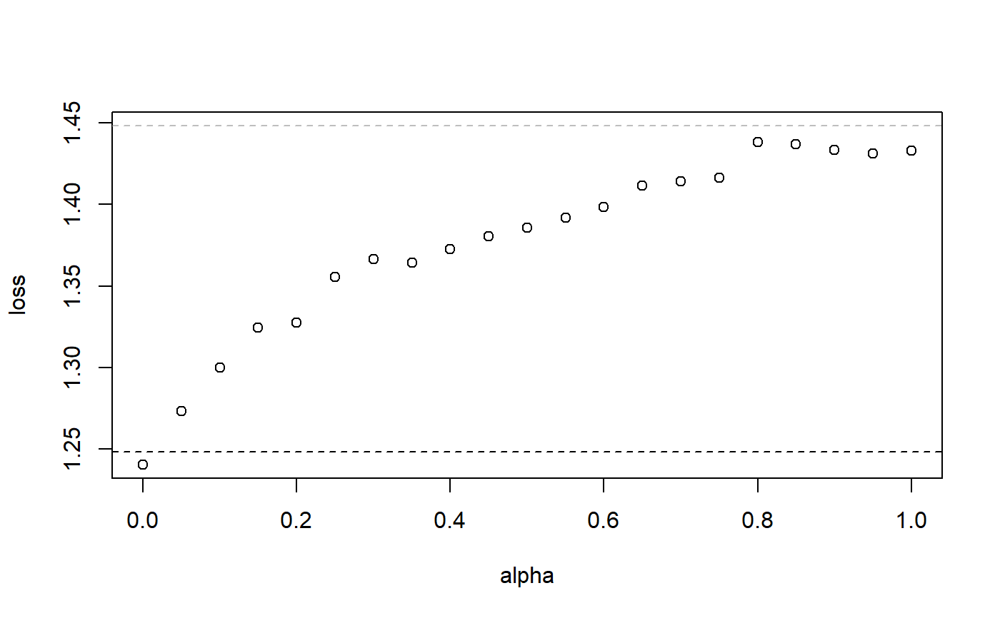

The R package starnet implements stacked elastic net regression.
The elastic net generalises ridge and lasso regularisation.
Instead of fixing or tuning the mixing parameter alpha,
we combine multiple alphas by stacked generalisation.
Use function starnet for model fitting.
Type library(starnet) and then ?starnet or
help("starnet)" to open its help file.
See the vignette for further examples.
Type vignette("starnet") or browseVignettes("starnet")
to open the vignette.
A Rauschenberger, E Glaab, and MA van de Wiel (2020). Predictive and interpretable models via the stacked elastic net". Manuscript in preparation.
#--- data simulation --- n <- 50; p <- 100 y <- rnorm(n=n) X <- matrix(rnorm(n*p),nrow=n,ncol=p) # n samples, p features #--- model fitting --- object <- starnet(y=y,X=X)#>#># "base": one model for each alpha # "meta": model for stacking them #--- make predictions --- y_hat <- predict(object,newx=X) # one column for each alpha, # and for tuning and stacking #--- extract coefficients --- coef <- coef(object) # scalar "alpha": intercept # vector "beta": slopes #--- model comparison --- loss <- cv.starnet(y=y,X=X)#>#>#>#>#>#>#>#>#>#>#>#>#>#>#>#>#>#>#>#># cross-validated loss for different alpha, # and for tuning and stacking